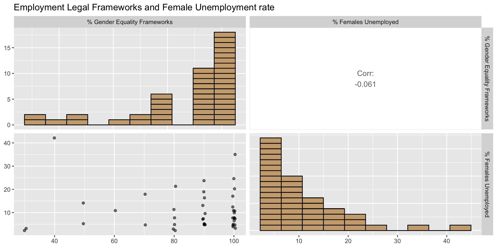
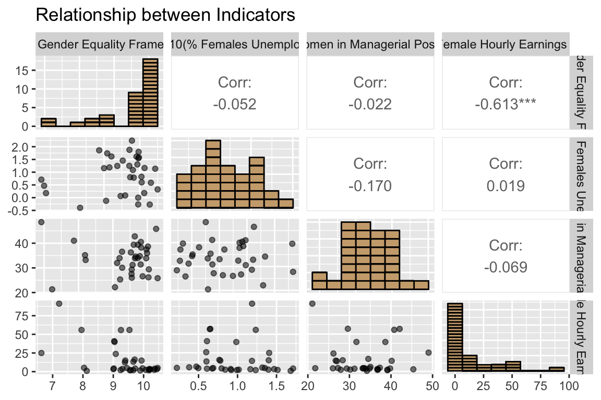

CSC3007-Team-Black-2
Add subtitle here
Relationship between nation’s legal framework achievements in gender equality and woman’s success in the economy.
Purpose of This Presentation
Research Questions
To what extent does a nation’s legal framework on gender equality affect economic growth for women?
Specifically, what is the relationship between a nation’s legal framework achievements in gender equality and woman’s success in the economy?
Can GDP, Happy Planet Index Score and Region serve as predictors for a nation’s legal framework achievements in gender equality & proportion of women in managerial positions?
Importance of This Research
- Economic empowerment:
The economic empowerment of women has broader implications for overall economic development.
- Policy formulation:
Inform policymakers and lawmakers about the effectiveness and relevance of legal frameworks in fostering economic growth for women.
Importance of This Research
- Gender equality:
The impact of these legal frameworks is crucial in advancing gender equality efforts.
- Societal impact:
Sheds light on the potential benefits and consequences of legal frameworks on economic growth, impacting woman’s lives and opportunities.
UN Sustainable Development Goals
Women participation in the economy is related to Goals 5 and 8.
Selected Indicators
Indicator 5.1.1: Legal frameworks that promote enforce and monitor gender equality (percentage of achievement 0 - 100) -- Area 3: employment and economic benefits
Indicator 5.5.2: Proportion of women in managerial positions
Indicator 8.5.1: Average hourly earnings of employees by sex, age, occupation and persons with disabilities
Indicator 8.5.2: Unemployment rate by sex, age and persons with disabilities
Choropleth Map: 5.1.1
Choropleth Map: 5.5.2

5.1.1 vs 5.5.2 Anticipation
We anticipate that the higher the nation’s legal framework achievements in gender equality will result in a higher percentage of women holding managerial positions.
- Because the chance of gender-based discrimination should be reduced as a result of the legal frameworks in place, this should result in better opportunities for women to hold managerial positions.
5.1.1 vs 5.5.2 Relation
5.1.1 vs 5.5.2 Relation data re-expression if needed
Choropleth Map: 8.5.1
Daily USD exchange rate as at end of day 2023-07-17 GMT 
Choropleth Map: 8.5.2

8.5.1 vs 8.5.2 Anticipation
We anticipate that countries with lower unemployment rates for women should have higher average hourly earnings for women.
- Because countries with lower unemployment rates have a better economic environment which should result in higher average income for their citizens
8.5.1 vs 8.5.2 Relation

8.5.1 vs 8.5.2 Relation data re-expression if needed
Table of Women Economical Success
5.1.1 vs 8.5.2 Anticipation
We anticipate that having a higher the nation’s legal framework achievements in gender equality would result in lower unemployment rate for women.
- Because by decreasing gender discrimination for women, more companies would be willing to employ women.
5.1.1 vs 8.5.2 Relation
There doesn’t seem to be any significant correlation between the percentage of legal employment and benefit frameworks for females, and the unemployment rate of females. However, this might be due to skewed distributions, hence we will re-express this data.
5.1.1 vs 8.5.2 Relation Re-Expressed
After Box Cox and logarithmic transformations, correlation coefficient seems to have improved positively. However, it still appears to be insignificant.

5.5.2 vs 8.5.1 Anticipation
We anticipate that having more women in managerial positions will increase the average hourly earning for female employees.
- Because in general, employees in a managerial position would receive higher income and with more women holding managerial positions, the average hourly earning for female employees will increase.
5.5.2 vs 8.5.1 Relation
Four-variable pair plot
K-Means Clustering

Pairs Plot Highlighting Clusters
Decision Tree
Evaluation of Decision Tree
# See project-sample slide 22
Summary of Quantitative Results
# See project-sample slide 23
# Last item, require above to be done
Policy Implications
# See project-sample slide 24
# Last item, require above to be done
/Users/jeanz/GitHub/csc3007-black2/csc3007-black2/csc3007-black2.qmd:36:81: style: [line_length_linter] Lines should not be more than 80 characters.
# Load 5.1.1 data - Legal frameworks that promote enforce and monitor gender equality (percentage of achievement 0 - 100) \-- Area 3: employment and economic benefits
~~~~~~~~~~~~~~~~~~~~~~~~~~~~~~~~~~~~~~~~~~~~~~~~~~~~~~~~~~~~~~~~~~~~~~~~~~~~~~~~^~~~~~~~~~~~~~~~~~~~~~~~~~~~~~~~~~~~~~~~~~~~~~~~~~~~~~~~~~~~~~~~~~~~~~~~~~~~~~~~~~~~~~
/Users/jeanz/GitHub/csc3007-black2/csc3007-black2/csc3007-black2.qmd:37:1: style: [object_length_linter] Variable and function names should not be longer than 30 characters.
indicator_5_1_1_employment_economic_benefits <- read_csv("data/Indicator_5.1.1%3A_Legal_frameworks_that_promote__enforce_and_monitor_gender_equality_(percentage_of_achievement__0_-_100)_--_Area_3%3A_employment_and_economic_benefits.csv", show_col_types = FALSE)
^~~~~~~~~~~~~~~~~~~~~~~~~~~~~~~~~~~~~~~~~~~~
/Users/jeanz/GitHub/csc3007-black2/csc3007-black2/csc3007-black2.qmd:37:81: style: [line_length_linter] Lines should not be more than 80 characters.
indicator_5_1_1_employment_economic_benefits <- read_csv("data/Indicator_5.1.1%3A_Legal_frameworks_that_promote__enforce_and_monitor_gender_equality_(percentage_of_achievement__0_-_100)_--_Area_3%3A_employment_and_economic_benefits.csv", show_col_types = FALSE)
~~~~~~~~~~~~~~~~~~~~~~~~~~~~~~~~~~~~~~~~~~~~~~~~~~~~~~~~~~~~~~~~~~~~~~~~~~~~~~~~^~~~~~~~~~~~~~~~~~~~~~~~~~~~~~~~~~~~~~~~~~~~~~~~~~~~~~~~~~~~~~~~~~~~~~~~~~~~~~~~~~~~~~~~~~~~~~~~~~~~~~~~~~~~~~~~~~~~~~~~~~~~~~~~~~~~~~~~~~~~~~~~~~~~~~~~~~~~~~~~~~~~~~~~~~~~~~~~~~~~~
/Users/jeanz/GitHub/csc3007-black2/csc3007-black2/csc3007-black2.qmd:40:81: style: [line_length_linter] Lines should not be more than 80 characters.
indicator_5_5_2_managerial <- read_csv("data/Indicator_5.5.2%3A_Proportion_of_women_in_managerial_positions_(percent).csv", show_col_types = FALSE)
~~~~~~~~~~~~~~~~~~~~~~~~~~~~~~~~~~~~~~~~~~~~~~~~~~~~~~~~~~~~~~~~~~~~~~~~~~~~~~~~^~~~~~~~~~~~~~~~~~~~~~~~~~~~~~~~~~~~~~~~~~~~~~~~~~~~~~~~~~~~~~~~~~~
/Users/jeanz/GitHub/csc3007-black2/csc3007-black2/csc3007-black2.qmd:42:81: style: [line_length_linter] Lines should not be more than 80 characters.
# Load 8.5.1 data - Average hourly earnings of employees by sex, age, occupation and persons with disabilities
~~~~~~~~~~~~~~~~~~~~~~~~~~~~~~~~~~~~~~~~~~~~~~~~~~~~~~~~~~~~~~~~~~~~~~~~~~~~~~~~^~~~~~~~~~~~~~~~~~~~~~~~~~~~~~
/Users/jeanz/GitHub/csc3007-black2/csc3007-black2/csc3007-black2.qmd:43:81: style: [line_length_linter] Lines should not be more than 80 characters.
indicator_8_5_1_average_hourly <- read_csv("data/Indicator_8.5.1%3A_Average_hourly_earnings_of_employees_by_sex_and_occupation_(local_currency).csv", show_col_types = FALSE)
~~~~~~~~~~~~~~~~~~~~~~~~~~~~~~~~~~~~~~~~~~~~~~~~~~~~~~~~~~~~~~~~~~~~~~~~~~~~~~~~^~~~~~~~~~~~~~~~~~~~~~~~~~~~~~~~~~~~~~~~~~~~~~~~~~~~~~~~~~~~~~~~~~~~~~~~~~~~~~~~~~~~~~~~~~~~~
/Users/jeanz/GitHub/csc3007-black2/csc3007-black2/csc3007-black2.qmd:46:81: style: [line_length_linter] Lines should not be more than 80 characters.
indicator_8_5_2_unemployment <- read_csv("data/Indicator_8.5.2%3A_Unemployment_rate__by_sex_and_disability_(percent).csv", show_col_types = FALSE)
~~~~~~~~~~~~~~~~~~~~~~~~~~~~~~~~~~~~~~~~~~~~~~~~~~~~~~~~~~~~~~~~~~~~~~~~~~~~~~~~^~~~~~~~~~~~~~~~~~~~~~~~~~~~~~~~~~~~~~~~~~~~~~~~~~~~~~~~~~~~~~~~~~
/Users/jeanz/GitHub/csc3007-black2/csc3007-black2/csc3007-black2.qmd:52:1: style: [object_length_linter] Variable and function names should not be longer than 30 characters.
indicator_5_1_1_employment_economic_benefits <- indicator_5_1_1_employment_economic_benefits |> select(indicator_reference, geoAreaName, parentName, type, X, Y, ISO3, latest_value)
^~~~~~~~~~~~~~~~~~~~~~~~~~~~~~~~~~~~~~~~~~~~
/Users/jeanz/GitHub/csc3007-black2/csc3007-black2/csc3007-black2.qmd:52:81: style: [line_length_linter] Lines should not be more than 80 characters.
indicator_5_1_1_employment_economic_benefits <- indicator_5_1_1_employment_economic_benefits |> select(indicator_reference, geoAreaName, parentName, type, X, Y, ISO3, latest_value)
~~~~~~~~~~~~~~~~~~~~~~~~~~~~~~~~~~~~~~~~~~~~~~~~~~~~~~~~~~~~~~~~~~~~~~~~~~~~~~~~^~~~~~~~~~~~~~~~~~~~~~~~~~~~~~~~~~~~~~~~~~~~~~~~~~~~~~~~~~~~~~~~~~~~~~~~~~~~~~~~~~~~~~~~~~~~~~~~~~~~
/Users/jeanz/GitHub/csc3007-black2/csc3007-black2/csc3007-black2.qmd:54:81: style: [line_length_linter] Lines should not be more than 80 characters.
indicator_5_5_2_managerial <- indicator_5_5_2_managerial |> select(indicator_reference, geoAreaName, parentName, type, X, Y, ISO3, latest_value)
~~~~~~~~~~~~~~~~~~~~~~~~~~~~~~~~~~~~~~~~~~~~~~~~~~~~~~~~~~~~~~~~~~~~~~~~~~~~~~~~^~~~~~~~~~~~~~~~~~~~~~~~~~~~~~~~~~~~~~~~~~~~~~~~~~~~~~~~~~~~~~~~
/Users/jeanz/GitHub/csc3007-black2/csc3007-black2/csc3007-black2.qmd:56:81: style: [line_length_linter] Lines should not be more than 80 characters.
indicator_8_5_1_average_hourly <- indicator_8_5_1_average_hourly |> select(indicator_reference, geoAreaName, parentName, type, X, Y, ISO3, sex_code, sex_desc, type_of_occupation_desc, latest_value)
~~~~~~~~~~~~~~~~~~~~~~~~~~~~~~~~~~~~~~~~~~~~~~~~~~~~~~~~~~~~~~~~~~~~~~~~~~~~~~~~^~~~~~~~~~~~~~~~~~~~~~~~~~~~~~~~~~~~~~~~~~~~~~~~~~~~~~~~~~~~~~~~~~~~~~~~~~~~~~~~~~~~~~~~~~~~~~~~~~~~~~~~~~~~~~~~~~~~~
/Users/jeanz/GitHub/csc3007-black2/csc3007-black2/csc3007-black2.qmd:58:81: style: [line_length_linter] Lines should not be more than 80 characters.
indicator_8_5_2_unemployment <- indicator_8_5_2_unemployment |> select(indicator_reference, geoAreaName, parentName, type, X, Y, ISO3, sex_code, sex_desc, disability_status_code, disability_status_desc, latest_value)
~~~~~~~~~~~~~~~~~~~~~~~~~~~~~~~~~~~~~~~~~~~~~~~~~~~~~~~~~~~~~~~~~~~~~~~~~~~~~~~~^~~~~~~~~~~~~~~~~~~~~~~~~~~~~~~~~~~~~~~~~~~~~~~~~~~~~~~~~~~~~~~~~~~~~~~~~~~~~~~~~~~~~~~~~~~~~~~~~~~~~~~~~~~~~~~~~~~~~~~~~~~~~~~~~~~~~~~~
/Users/jeanz/GitHub/csc3007-black2/csc3007-black2/csc3007-black2.qmd:60:1: style: [object_name_linter] Variable and function name style should be snake_case or symbols.
World <- select(World, ISO3="iso_a3", geometry="geometry")
^~~~~
/Users/jeanz/GitHub/csc3007-black2/csc3007-black2/csc3007-black2.qmd:60:28: style: [infix_spaces_linter] Put spaces around all infix operators.
World <- select(World, ISO3="iso_a3", geometry="geometry")
^
/Users/jeanz/GitHub/csc3007-black2/csc3007-black2/csc3007-black2.qmd:60:47: style: [infix_spaces_linter] Put spaces around all infix operators.
World <- select(World, ISO3="iso_a3", geometry="geometry")
^
/Users/jeanz/GitHub/csc3007-black2/csc3007-black2/csc3007-black2.qmd:229:81: style: [line_length_linter] Lines should not be more than 80 characters.
# Correlation Graph. See Sample-Project slide 11,12,15 *Please Judge if is approriate. Goal is to see if there is any significant statitical correlation
~~~~~~~~~~~~~~~~~~~~~~~~~~~~~~~~~~~~~~~~~~~~~~~~~~~~~~~~~~~~~~~~~~~~~~~~~~~~~~~~^~~~~~~~~~~~~~~~~~~~~~~~~~~~~~~~~~~~~~~~~~~~~~~~~~~~~~~~~~~~~~~~~~~~~~~~
/Users/jeanz/GitHub/csc3007-black2/csc3007-black2/csc3007-black2.qmd:249:20: style: [single_quotes_linter] Only use double-quotes.
by = c('ISO3', 'geoAreaName'),
^~~~~~
/Users/jeanz/GitHub/csc3007-black2/csc3007-black2/csc3007-black2.qmd:249:28: style: [single_quotes_linter] Only use double-quotes.
by = c('ISO3', 'geoAreaName'),
^~~~~~~~~~~~~
/Users/jeanz/GitHub/csc3007-black2/csc3007-black2/csc3007-black2.qmd:253:65: style: [infix_spaces_linter] Put spaces around all infix operators.
gpairs <- ggpairs(merged_data, columns = 3:4, ggplot2::aes(label=geoAreaName))
^
/Users/jeanz/GitHub/csc3007-black2/csc3007-black2/csc3007-black2.qmd:254:3: style: [commented_code_linter] Commented code should be removed.
# ggplotly(gpairs)
^~~~~~~~~~~~~~~~
/Users/jeanz/GitHub/csc3007-black2/csc3007-black2/csc3007-black2.qmd:262:81: style: [line_length_linter] Lines should not be more than 80 characters.
# Correlation Graph. See Sample-Project slide 11,12,15 *Please Judge if is approriate. Goal is to see if there is any significant statitical correlation
~~~~~~~~~~~~~~~~~~~~~~~~~~~~~~~~~~~~~~~~~~~~~~~~~~~~~~~~~~~~~~~~~~~~~~~~~~~~~~~~^~~~~~~~~~~~~~~~~~~~~~~~~~~~~~~~~~~~~~~~~~~~~~~~~~~~~~~~~~~~~~~~~~~~~~~~~
/Users/jeanz/GitHub/csc3007-black2/csc3007-black2/csc3007-black2.qmd:262:153: style: [trailing_whitespace_linter] Trailing whitespace is superfluous.
# Correlation Graph. See Sample-Project slide 11,12,15 *Please Judge if is approriate. Goal is to see if there is any significant statitical correlation
^
/Users/jeanz/GitHub/csc3007-black2/csc3007-black2/csc3007-black2.qmd:270:32: style: [trailing_whitespace_linter] Trailing whitespace is superfluous.
# getting exchange rate for USD
^
/Users/jeanz/GitHub/csc3007-black2/csc3007-black2/csc3007-black2.qmd:271:45: style: [trailing_whitespace_linter] Trailing whitespace is superfluous.
exchange_rate <- exchange_rate_latest("USD")
^~
/Users/jeanz/GitHub/csc3007-black2/csc3007-black2/csc3007-black2.qmd:273:26: style: [trailing_whitespace_linter] Trailing whitespace is superfluous.
# retrieving only Females
^
/Users/jeanz/GitHub/csc3007-black2/csc3007-black2/csc3007-black2.qmd:274:81: style: [line_length_linter] Lines should not be more than 80 characters.
indicator_8_5_1_average_hourly <- filter(indicator_8_5_1_average_hourly, sex_code == "F")
~~~~~~~~~~~~~~~~~~~~~~~~~~~~~~~~~~~~~~~~~~~~~~~~~~~~~~~~~~~~~~~~~~~~~~~~~~~~~~~~^~~~~~~~~~~
/Users/jeanz/GitHub/csc3007-black2/csc3007-black2/csc3007-black2.qmd:274:90: style: [trailing_whitespace_linter] Trailing whitespace is superfluous.
indicator_8_5_1_average_hourly <- filter(indicator_8_5_1_average_hourly, sex_code == "F")
^~
/Users/jeanz/GitHub/csc3007-black2/csc3007-black2/csc3007-black2.qmd:276:55: style: [trailing_whitespace_linter] Trailing whitespace is superfluous.
# get currency code and country code from country name
^
/Users/jeanz/GitHub/csc3007-black2/csc3007-black2/csc3007-black2.qmd:277:73: style: [trailing_whitespace_linter] Trailing whitespace is superfluous.
indicator_8_5_1_average_hourly <- mutate(indicator_8_5_1_average_hourly,
^~~
/Users/jeanz/GitHub/csc3007-black2/csc3007-black2/csc3007-black2.qmd:280:16: style: [single_quotes_linter] Only use double-quotes.
origin = 'iso3c',
^~~~~~~
/Users/jeanz/GitHub/csc3007-black2/csc3007-black2/csc3007-black2.qmd:281:21: style: [single_quotes_linter] Only use double-quotes.
destination = 'iso4217c',
^~~~~~~~~~
/Users/jeanz/GitHub/csc3007-black2/csc3007-black2/csc3007-black2.qmd:282:21: style: [trailing_whitespace_linter] Trailing whitespace is superfluous.
warn = FALSE))
^~
/Users/jeanz/GitHub/csc3007-black2/csc3007-black2/csc3007-black2.qmd:284:19: style: [trailing_whitespace_linter] Trailing whitespace is superfluous.
# get value in USD
^
/Users/jeanz/GitHub/csc3007-black2/csc3007-black2/csc3007-black2.qmd:285:81: style: [line_length_linter] Lines should not be more than 80 characters.
indicator_8_5_1_average_hourly$exchange_usd <- exchange_rate$one_usd_is_equivalent_to[match(indicator_8_5_1_average_hourly$currency_code, exchange_rate$currency)]
~~~~~~~~~~~~~~~~~~~~~~~~~~~~~~~~~~~~~~~~~~~~~~~~~~~~~~~~~~~~~~~~~~~~~~~~~~~~~~~~^~~~~~~~~~~~~~~~~~~~~~~~~~~~~~~~~~~~~~~~~~~~~~~~~~~~~~~~~~~~~~~~~~~~~~~~~~~~~~~~~~~
/Users/jeanz/GitHub/csc3007-black2/csc3007-black2/csc3007-black2.qmd:285:163: style: [trailing_whitespace_linter] Trailing whitespace is superfluous.
indicator_8_5_1_average_hourly$exchange_usd <- exchange_rate$one_usd_is_equivalent_to[match(indicator_8_5_1_average_hourly$currency_code, exchange_rate$currency)]
^
/Users/jeanz/GitHub/csc3007-black2/csc3007-black2/csc3007-black2.qmd:287:81: style: [line_length_linter] Lines should not be more than 80 characters.
indicator_8_5_1_average_hourly$amount_usd <- indicator_8_5_1_average_hourly$latest_value / indicator_8_5_1_average_hourly$exchange_usd
~~~~~~~~~~~~~~~~~~~~~~~~~~~~~~~~~~~~~~~~~~~~~~~~~~~~~~~~~~~~~~~~~~~~~~~~~~~~~~~~^~~~~~~~~~~~~~~~~~~~~~~~~~~~~~~~~~~~~~~~~~~~~~~~~~~~~~~~~
/Users/jeanz/GitHub/csc3007-black2/csc3007-black2/csc3007-black2.qmd:287:135: style: [trailing_whitespace_linter] Trailing whitespace is superfluous.
indicator_8_5_1_average_hourly$amount_usd <- indicator_8_5_1_average_hourly$latest_value / indicator_8_5_1_average_hourly$exchange_usd
^~~
/Users/jeanz/GitHub/csc3007-black2/csc3007-black2/csc3007-black2.qmd:289:21: style: [trailing_whitespace_linter] Trailing whitespace is superfluous.
# max USD = 64.19665
^
/Users/jeanz/GitHub/csc3007-black2/csc3007-black2/csc3007-black2.qmd:290:16: style: [trailing_whitespace_linter] Trailing whitespace is superfluous.
# min value = 0
^
/Users/jeanz/GitHub/csc3007-black2/csc3007-black2/csc3007-black2.qmd:291:3: style: [commented_code_linter] Commented code should be removed.
# max(indicator_8_5_1_average_hourly$amount_usd, na.rm = T)
^~~~~~~~~~~~~~~~~~~~~~~~~~~~~~~~~~~~~~~~~~~~~~~~~~~~~~~~~~
/Users/jeanz/GitHub/csc3007-black2/csc3007-black2/csc3007-black2.qmd:291:60: style: [trailing_whitespace_linter] Trailing whitespace is superfluous.
# max(indicator_8_5_1_average_hourly$amount_usd, na.rm = T)
^
/Users/jeanz/GitHub/csc3007-black2/csc3007-black2/csc3007-black2.qmd:292:3: style: [commented_code_linter] Commented code should be removed.
# min(indicator_8_5_1_average_hourly$amount_usd, na.rm = T)
^~~~~~~~~~~~~~~~~~~~~~~~~~~~~~~~~~~~~~~~~~~~~~~~~~~~~~~~~~~
/Users/jeanz/GitHub/csc3007-black2/csc3007-black2/csc3007-black2.qmd:292:60: style: [trailing_whitespace_linter] Trailing whitespace is superfluous.
# min(indicator_8_5_1_average_hourly$amount_usd, na.rm = T)
^~
/Users/jeanz/GitHub/csc3007-black2/csc3007-black2/csc3007-black2.qmd:294:18: style: [trailing_whitespace_linter] Trailing whitespace is superfluous.
# graph from 1-65
^
/Users/jeanz/GitHub/csc3007-black2/csc3007-black2/csc3007-black2.qmd:295:12: style: [trailing_whitespace_linter] Trailing whitespace is superfluous.
cmap_851 <-
^~~
/Users/jeanz/GitHub/csc3007-black2/csc3007-black2/csc3007-black2.qmd:296:69: style: [trailing_whitespace_linter] Trailing whitespace is superfluous.
World |> left_join(indicator_8_5_1_average_hourly, by = c("ISO3"))
^~
/Users/jeanz/GitHub/csc3007-black2/csc3007-black2/csc3007-black2.qmd:298:29: style: [trailing_whitespace_linter] Trailing whitespace is superfluous.
cmap_851 <- mutate(cmap_851,
^
/Users/jeanz/GitHub/csc3007-black2/csc3007-black2/csc3007-black2.qmd:301:20: style: [commas_linter] Commas should always have a space after.
breaks = c(0,1,2,3,5,8,13,21,34,55,
^
/Users/jeanz/GitHub/csc3007-black2/csc3007-black2/csc3007-black2.qmd:301:22: style: [commas_linter] Commas should always have a space after.
breaks = c(0,1,2,3,5,8,13,21,34,55,
^
/Users/jeanz/GitHub/csc3007-black2/csc3007-black2/csc3007-black2.qmd:301:24: style: [commas_linter] Commas should always have a space after.
breaks = c(0,1,2,3,5,8,13,21,34,55,
^
/Users/jeanz/GitHub/csc3007-black2/csc3007-black2/csc3007-black2.qmd:301:26: style: [commas_linter] Commas should always have a space after.
breaks = c(0,1,2,3,5,8,13,21,34,55,
^
/Users/jeanz/GitHub/csc3007-black2/csc3007-black2/csc3007-black2.qmd:301:28: style: [commas_linter] Commas should always have a space after.
breaks = c(0,1,2,3,5,8,13,21,34,55,
^
/Users/jeanz/GitHub/csc3007-black2/csc3007-black2/csc3007-black2.qmd:301:30: style: [commas_linter] Commas should always have a space after.
breaks = c(0,1,2,3,5,8,13,21,34,55,
^
/Users/jeanz/GitHub/csc3007-black2/csc3007-black2/csc3007-black2.qmd:301:33: style: [commas_linter] Commas should always have a space after.
breaks = c(0,1,2,3,5,8,13,21,34,55,
^
/Users/jeanz/GitHub/csc3007-black2/csc3007-black2/csc3007-black2.qmd:301:36: style: [commas_linter] Commas should always have a space after.
breaks = c(0,1,2,3,5,8,13,21,34,55,
^
/Users/jeanz/GitHub/csc3007-black2/csc3007-black2/csc3007-black2.qmd:301:39: style: [commas_linter] Commas should always have a space after.
breaks = c(0,1,2,3,5,8,13,21,34,55,
^
/Users/jeanz/GitHub/csc3007-black2/csc3007-black2/csc3007-black2.qmd:302:42: style: [trailing_whitespace_linter] Trailing whitespace is superfluous.
max(amount_usd, na.rm = TRUE)),
^
/Users/jeanz/GitHub/csc3007-black2/csc3007-black2/csc3007-black2.qmd:308:18: style: [trailing_whitespace_linter] Trailing whitespace is superfluous.
"5 to 8",
^
/Users/jeanz/GitHub/csc3007-black2/csc3007-black2/csc3007-black2.qmd:313:23: style: [trailing_whitespace_linter] Trailing whitespace is superfluous.
"55 and above"
^
/Users/jeanz/GitHub/csc3007-black2/csc3007-black2/csc3007-black2.qmd:315:9: style: [trailing_whitespace_linter] Trailing whitespace is superfluous.
))
^~~
/Users/jeanz/GitHub/csc3007-black2/csc3007-black2/csc3007-black2.qmd:317:22: style: [trailing_whitespace_linter] Trailing whitespace is superfluous.
tm_poa_after_shape <-
^
/Users/jeanz/GitHub/csc3007-black2/csc3007-black2/csc3007-black2.qmd:320:35: style: [trailing_whitespace_linter] Trailing whitespace is superfluous.
title = "Earnings in USD") +
^
/Users/jeanz/GitHub/csc3007-black2/csc3007-black2/csc3007-black2.qmd:322:54: style: [trailing_whitespace_linter] Trailing whitespace is superfluous.
main.title = "Average Hourly Earning by Women",
^
/Users/jeanz/GitHub/csc3007-black2/csc3007-black2/csc3007-black2.qmd:324:48: style: [trailing_whitespace_linter] Trailing whitespace is superfluous.
inner.margins = c(0.01, 0.2, 0.01, 0.01),
^
/Users/jeanz/GitHub/csc3007-black2/csc3007-black2/csc3007-black2.qmd:325:30: style: [trailing_whitespace_linter] Trailing whitespace is superfluous.
bg.color = "lightblue",
^
/Users/jeanz/GitHub/csc3007-black2/csc3007-black2/csc3007-black2.qmd:328:20: style: [trailing_whitespace_linter] Trailing whitespace is superfluous.
frame = FALSE
^~~
/Users/jeanz/GitHub/csc3007-black2/csc3007-black2/csc3007-black2.qmd:329:8: style: [trailing_whitespace_linter] Trailing whitespace is superfluous.
) +
^
/Users/jeanz/GitHub/csc3007-black2/csc3007-black2/csc3007-black2.qmd:330:35: style: [trailing_whitespace_linter] Trailing whitespace is superfluous.
tm_text("ISO3", size = "AREA") +
^~~
/Users/jeanz/GitHub/csc3007-black2/csc3007-black2/csc3007-black2.qmd:332:38: style: [trailing_whitespace_linter] Trailing whitespace is superfluous.
position = c("left", "bottom"))
^~
/Users/jeanz/GitHub/csc3007-black2/csc3007-black2/csc3007-black2.qmd:334:58: style: [trailing_whitespace_linter] Trailing whitespace is superfluous.
tm_poa <- tm_shape(cmap_851, projection = "ESRI:54012") +
^
/Users/jeanz/GitHub/csc3007-black2/csc3007-black2/csc3007-black2.qmd:335:21: style: [trailing_whitespace_linter] Trailing whitespace is superfluous.
tm_poa_after_shape
^~
/Users/jeanz/GitHub/csc3007-black2/csc3007-black2/csc3007-black2.qmd:345:26: style: [trailing_whitespace_linter] Trailing whitespace is superfluous.
# retrieving only Females
^
/Users/jeanz/GitHub/csc3007-black2/csc3007-black2/csc3007-black2.qmd:346:81: style: [line_length_linter] Lines should not be more than 80 characters.
indicator_8_5_2_unemployment <- filter(indicator_8_5_2_unemployment, sex_code == "F")
~~~~~~~~~~~~~~~~~~~~~~~~~~~~~~~~~~~~~~~~~~~~~~~~~~~~~~~~~~~~~~~~~~~~~~~~~~~~~~~~^~~~~~
/Users/jeanz/GitHub/csc3007-black2/csc3007-black2/csc3007-black2.qmd:346:86: style: [trailing_whitespace_linter] Trailing whitespace is superfluous.
indicator_8_5_2_unemployment <- filter(indicator_8_5_2_unemployment, sex_code == "F")
^
/Users/jeanz/GitHub/csc3007-black2/csc3007-black2/csc3007-black2.qmd:348:3: style: [commented_code_linter] Commented code should be removed.
# nrow(indicator_8_5_2_unemployment)
^~~~~~~~~~~~~~~~~~~~~~~~~~~~~~~~~~
/Users/jeanz/GitHub/csc3007-black2/csc3007-black2/csc3007-black2.qmd:349:3: style: [commented_code_linter] Commented code should be removed.
# count <- sum(!is.na(indicator_8_5_2_unemployment$latest_value) & indicator_8_5_2_unemployment$latest_value >= 40 & indicator_8_5_2_unemployment$latest_value <= 50)
^~~~~~~~~~~~~~~~~~~~~~~~~~~~~~~~~~~~~~~~~~~~~~~~~~~~~~~~~~~~~~~~~~~~~~~~~~~~~~~~~~~~~~~~~~~~~~~~~~~~~~~~~~~~~~~~~~~~~~~~~~~~~~~~~~~~~~~~~~~~~~~~~~~~~~~~~~~~~~~~~~~
/Users/jeanz/GitHub/csc3007-black2/csc3007-black2/csc3007-black2.qmd:349:81: style: [line_length_linter] Lines should not be more than 80 characters.
# count <- sum(!is.na(indicator_8_5_2_unemployment$latest_value) & indicator_8_5_2_unemployment$latest_value >= 40 & indicator_8_5_2_unemployment$latest_value <= 50)
~~~~~~~~~~~~~~~~~~~~~~~~~~~~~~~~~~~~~~~~~~~~~~~~~~~~~~~~~~~~~~~~~~~~~~~~~~~~~~~~^~~~~~~~~~~~~~~~~~~~~~~~~~~~~~~~~~~~~~~~~~~~~~~~~~~~~~~~~~~~~~~~~~~~~~~~~~~~~~~~~~~~~
/Users/jeanz/GitHub/csc3007-black2/csc3007-black2/csc3007-black2.qmd:354:3: style: [commented_code_linter] Commented code should be removed.
# max(indicator_8_5_2_unemployment$latest_value, na.rm = T)
^~~~~~~~~~~~~~~~~~~~~~~~~~~~~~~~~~~~~~~~~~~~~~~~~~~~~~~~~~
/Users/jeanz/GitHub/csc3007-black2/csc3007-black2/csc3007-black2.qmd:354:60: style: [trailing_whitespace_linter] Trailing whitespace is superfluous.
# max(indicator_8_5_2_unemployment$latest_value, na.rm = T)
^
/Users/jeanz/GitHub/csc3007-black2/csc3007-black2/csc3007-black2.qmd:355:3: style: [commented_code_linter] Commented code should be removed.
# min(indicator_8_5_2_unemployment$latest_value, na.rm = T)
^~~~~~~~~~~~~~~~~~~~~~~~~~~~~~~~~~~~~~~~~~~~~~~~~~~~~~~~~~
/Users/jeanz/GitHub/csc3007-black2/csc3007-black2/csc3007-black2.qmd:355:60: style: [trailing_whitespace_linter] Trailing whitespace is superfluous.
# min(indicator_8_5_2_unemployment$latest_value, na.rm = T)
^
/Users/jeanz/GitHub/csc3007-black2/csc3007-black2/csc3007-black2.qmd:357:12: style: [trailing_whitespace_linter] Trailing whitespace is superfluous.
cmap_852 <-
^~~
/Users/jeanz/GitHub/csc3007-black2/csc3007-black2/csc3007-black2.qmd:358:67: style: [trailing_whitespace_linter] Trailing whitespace is superfluous.
World |> left_join(indicator_8_5_2_unemployment, by = c("ISO3"))
^~
/Users/jeanz/GitHub/csc3007-black2/csc3007-black2/csc3007-black2.qmd:414:81: style: [line_length_linter] Lines should not be more than 80 characters.
# Correlation Graph. See Sample-Project slide 11,12,15 *Please Judge if is approriate. Goal is to see if there is any significant statitical correlation
~~~~~~~~~~~~~~~~~~~~~~~~~~~~~~~~~~~~~~~~~~~~~~~~~~~~~~~~~~~~~~~~~~~~~~~~~~~~~~~~^~~~~~~~~~~~~~~~~~~~~~~~~~~~~~~~~~~~~~~~~~~~~~~~~~~~~~~~~~~~~~~~~~~~~~~~~
/Users/jeanz/GitHub/csc3007-black2/csc3007-black2/csc3007-black2.qmd:414:153: style: [trailing_whitespace_linter] Trailing whitespace is superfluous.
# Correlation Graph. See Sample-Project slide 11,12,15 *Please Judge if is approriate. Goal is to see if there is any significant statitical correlation
^
/Users/jeanz/GitHub/csc3007-black2/csc3007-black2/csc3007-black2.qmd:431:2: style: [commented_code_linter] Commented code should be removed.
#joined_unemployment_amtusd <- left_join(graph_usd_dollar, graph_unemployment, by = c("ISO3", "geoAreaName")) %>% na.omit()
^~~~~~~~~~~~~~~~~~~~~~~~~~~~~~~~~~~~~~~~~~~~~~~~~~~~~~~~~~~~~~~~~~~~~~~~~~~~~~~~~~~~~~~~~~~~~~~~~~~~~~~~~~~~~~~~~~~~~~~~~~
/Users/jeanz/GitHub/csc3007-black2/csc3007-black2/csc3007-black2.qmd:431:81: style: [line_length_linter] Lines should not be more than 80 characters.
#joined_unemployment_amtusd <- left_join(graph_usd_dollar, graph_unemployment, by = c("ISO3", "geoAreaName")) %>% na.omit()
~~~~~~~~~~~~~~~~~~~~~~~~~~~~~~~~~~~~~~~~~~~~~~~~~~~~~~~~~~~~~~~~~~~~~~~~~~~~~~~~^~~~~~~~~~~~~~~~~~~~~~~~~~~~~~~~~~~~~~~~~~~
/Users/jeanz/GitHub/csc3007-black2/csc3007-black2/csc3007-black2.qmd:435:20: style: [single_quotes_linter] Only use double-quotes.
by = c('ISO3', 'geoAreaName'),
^~~~~~
/Users/jeanz/GitHub/csc3007-black2/csc3007-black2/csc3007-black2.qmd:435:28: style: [single_quotes_linter] Only use double-quotes.
by = c('ISO3', 'geoAreaName'),
^~~~~~~~~~~~~
/Users/jeanz/GitHub/csc3007-black2/csc3007-black2/csc3007-black2.qmd:448:3: style: [commented_code_linter] Commented code should be removed.
# ggpairs(joined_df, columns = 3:4)
^~~~~~~~~~~~~~~~~~~~~~~~~~~~~~~~~
/Users/jeanz/GitHub/csc3007-black2/csc3007-black2/csc3007-black2.qmd:449:81: style: [line_length_linter] Lines should not be more than 80 characters.
g_pairs <- ggpairs(joined_unemployment_amtusd, columns = c("amtusd_scaled", "percent_scaled"), ggplot2::aes(label=geoAreaName))
~~~~~~~~~~~~~~~~~~~~~~~~~~~~~~~~~~~~~~~~~~~~~~~~~~~~~~~~~~~~~~~~~~~~~~~~~~~~~~~~^~~~~~~~~~~~~~~~~~~~~~~~~~~~~~~~~~~~~~~~~~~~~~~
/Users/jeanz/GitHub/csc3007-black2/csc3007-black2/csc3007-black2.qmd:449:114: style: [infix_spaces_linter] Put spaces around all infix operators.
g_pairs <- ggpairs(joined_unemployment_amtusd, columns = c("amtusd_scaled", "percent_scaled"), ggplot2::aes(label=geoAreaName))
^
/Users/jeanz/GitHub/csc3007-black2/csc3007-black2/csc3007-black2.qmd:451:3: style: [commented_code_linter] Commented code should be removed.
# ggplotly(g_pairs)
^~~~~~~~~~~~~~~~~
/Users/jeanz/GitHub/csc3007-black2/csc3007-black2/csc3007-black2.qmd:459:81: style: [line_length_linter] Lines should not be more than 80 characters.
# Correlation Graph. See Sample-Project slide 11,12,15 *Please Judge if is approriate. Goal is to see if there is any significant statitical correlation
~~~~~~~~~~~~~~~~~~~~~~~~~~~~~~~~~~~~~~~~~~~~~~~~~~~~~~~~~~~~~~~~~~~~~~~~~~~~~~~~^~~~~~~~~~~~~~~~~~~~~~~~~~~~~~~~~~~~~~~~~~~~~~~~~~~~~~~~~~~~~~~~~~~~~~~~~
/Users/jeanz/GitHub/csc3007-black2/csc3007-black2/csc3007-black2.qmd:459:153: style: [trailing_whitespace_linter] Trailing whitespace is superfluous.
# Correlation Graph. See Sample-Project slide 11,12,15 *Please Judge if is approriate. Goal is to see if there is any significant statitical correlation
^
/Users/jeanz/GitHub/csc3007-black2/csc3007-black2/csc3007-black2.qmd:482:81: style: [line_length_linter] Lines should not be more than 80 characters.
# Correlation Graph. See Sample-Project slide 11,12,15 *Please Judge if is approriate. Goal is to see if there is any significant statitical correlation
~~~~~~~~~~~~~~~~~~~~~~~~~~~~~~~~~~~~~~~~~~~~~~~~~~~~~~~~~~~~~~~~~~~~~~~~~~~~~~~~^~~~~~~~~~~~~~~~~~~~~~~~~~~~~~~~~~~~~~~~~~~~~~~~~~~~~~~~~~~~~~~~~~~~~~~~~
/Users/jeanz/GitHub/csc3007-black2/csc3007-black2/csc3007-black2.qmd:482:153: style: [trailing_whitespace_linter] Trailing whitespace is superfluous.
# Correlation Graph. See Sample-Project slide 11,12,15 *Please Judge if is approriate. Goal is to see if there is any significant statitical correlation
^
/Users/jeanz/GitHub/csc3007-black2/csc3007-black2/csc3007-black2.qmd:485:67: style: [trailing_whitespace_linter] Trailing whitespace is superfluous.
formatted_5_1_1 <- indicator_5_1_1_employment_economic_benefits |>
^
/Users/jeanz/GitHub/csc3007-black2/csc3007-black2/csc3007-black2.qmd:487:81: style: [line_length_linter] Lines should not be more than 80 characters.
select("Country" = geoAreaName, ISO3, "% Female Legal Coverage" = latest_value) |>
~~~~~~~~~~~~~~~~~~~~~~~~~~~~~~~~~~~~~~~~~~~~~~~~~~~~~~~~~~~~~~~~~~~~~~~~~~~~~~~~^~~~
/Users/jeanz/GitHub/csc3007-black2/csc3007-black2/csc3007-black2.qmd:493:81: style: [line_length_linter] Lines should not be more than 80 characters.
select("Country" = geoAreaName, ISO3, disability_status_desc, "sex" = sex_desc, "% Females Unemployed" = latest_value) |>
~~~~~~~~~~~~~~~~~~~~~~~~~~~~~~~~~~~~~~~~~~~~~~~~~~~~~~~~~~~~~~~~~~~~~~~~~~~~~~~~^~~~~~~~~~~~~~~~~~~~~~~~~~~~~~~~~~~~~~~~~~~
/Users/jeanz/GitHub/csc3007-black2/csc3007-black2/csc3007-black2.qmd:494:81: style: [line_length_linter] Lines should not be more than 80 characters.
filter(`sex` %in% c("Female"), disability_status_desc == "No breakdown by disability") |>
~~~~~~~~~~~~~~~~~~~~~~~~~~~~~~~~~~~~~~~~~~~~~~~~~~~~~~~~~~~~~~~~~~~~~~~~~~~~~~~~^~~~~~~~~~~
/Users/jeanz/GitHub/csc3007-black2/csc3007-black2/csc3007-black2.qmd:506:10: style: [trailing_whitespace_linter] Trailing whitespace is superfluous.
# initial
^
/Users/jeanz/GitHub/csc3007-black2/csc3007-black2/csc3007-black2.qmd:510:47: style: [trailing_whitespace_linter] Trailing whitespace is superfluous.
columns = c("% Female Legal Coverage",
^
/Users/jeanz/GitHub/csc3007-black2/csc3007-black2/csc3007-black2.qmd:513:49: style: [trailing_whitespace_linter] Trailing whitespace is superfluous.
lower = list(continuous = wrap("points",
^
/Users/jeanz/GitHub/csc3007-black2/csc3007-black2/csc3007-black2.qmd:514:46: style: [infix_spaces_linter] Put spaces around all infix operators.
position=position_jitter(
^
/Users/jeanz/GitHub/csc3007-black2/csc3007-black2/csc3007-black2.qmd:515:51: style: [trailing_whitespace_linter] Trailing whitespace is superfluous.
height = 1,
^
/Users/jeanz/GitHub/csc3007-black2/csc3007-black2/csc3007-black2.qmd:518:10: style: [trailing_whitespace_linter] Trailing whitespace is superfluous.
)
^
/Users/jeanz/GitHub/csc3007-black2/csc3007-black2/csc3007-black2.qmd:520:2: style: [commented_code_linter] Commented code should be removed.
#ggplotly(plot)
^~~~~~~~~~~~~~
/Users/jeanz/GitHub/csc3007-black2/csc3007-black2/csc3007-black2.qmd:548:55: style: [trailing_whitespace_linter] Trailing whitespace is superfluous.
columns = c("Box-Cox % Female Legal Coverage",
^
/Users/jeanz/GitHub/csc3007-black2/csc3007-black2/csc3007-black2.qmd:551:49: style: [trailing_whitespace_linter] Trailing whitespace is superfluous.
lower = list(continuous = wrap("points",
^
/Users/jeanz/GitHub/csc3007-black2/csc3007-black2/csc3007-black2.qmd:552:46: style: [infix_spaces_linter] Put spaces around all infix operators.
position=position_jitter(
^
/Users/jeanz/GitHub/csc3007-black2/csc3007-black2/csc3007-black2.qmd:553:46: style: [infix_spaces_linter] Put spaces around all infix operators.
height=1,
^
/Users/jeanz/GitHub/csc3007-black2/csc3007-black2/csc3007-black2.qmd:553:49: style: [trailing_whitespace_linter] Trailing whitespace is superfluous.
height=1,
^
/Users/jeanz/GitHub/csc3007-black2/csc3007-black2/csc3007-black2.qmd:554:45: style: [infix_spaces_linter] Put spaces around all infix operators.
width=0.5),
^
/Users/jeanz/GitHub/csc3007-black2/csc3007-black2/csc3007-black2.qmd:556:10: style: [trailing_whitespace_linter] Trailing whitespace is superfluous.
)
^
/Users/jeanz/GitHub/csc3007-black2/csc3007-black2/csc3007-black2.qmd:558:3: style: [commented_code_linter] Commented code should be removed.
# ggplotly(plot)
^~~~~~~~~~~~~~
/Users/jeanz/GitHub/csc3007-black2/csc3007-black2/csc3007-black2.qmd:573:81: style: [line_length_linter] Lines should not be more than 80 characters.
# Correlation Graph. See Sample-Project slide 11,12,15 *Please Judge if is approriate. Goal is to see if there is any significant statitical correlation
~~~~~~~~~~~~~~~~~~~~~~~~~~~~~~~~~~~~~~~~~~~~~~~~~~~~~~~~~~~~~~~~~~~~~~~~~~~~~~~~^~~~~~~~~~~~~~~~~~~~~~~~~~~~~~~~~~~~~~~~~~~~~~~~~~~~~~~~~~~~~~~~~~~~~~~~~
/Users/jeanz/GitHub/csc3007-black2/csc3007-black2/csc3007-black2.qmd:573:153: style: [trailing_whitespace_linter] Trailing whitespace is superfluous.
# Correlation Graph. See Sample-Project slide 11,12,15 *Please Judge if is approriate. Goal is to see if there is any significant statitical correlation
^
/Users/jeanz/GitHub/csc3007-black2/csc3007-black2/csc3007-black2.qmd:585:67: style: [trailing_whitespace_linter] Trailing whitespace is superfluous.
formatted_5_1_1 <- indicator_5_1_1_employment_economic_benefits |>
^
/Users/jeanz/GitHub/csc3007-black2/csc3007-black2/csc3007-black2.qmd:587:81: style: [line_length_linter] Lines should not be more than 80 characters.
select("Country" = geoAreaName, ISO3, "% Female Legal Coverage" = latest_value) |>
~~~~~~~~~~~~~~~~~~~~~~~~~~~~~~~~~~~~~~~~~~~~~~~~~~~~~~~~~~~~~~~~~~~~~~~~~~~~~~~~^~~~
/Users/jeanz/GitHub/csc3007-black2/csc3007-black2/csc3007-black2.qmd:593:81: style: [line_length_linter] Lines should not be more than 80 characters.
select("Country" = geoAreaName, ISO3, disability_status_desc, "sex" = sex_desc, "% Females Unemployed" = latest_value) |>
~~~~~~~~~~~~~~~~~~~~~~~~~~~~~~~~~~~~~~~~~~~~~~~~~~~~~~~~~~~~~~~~~~~~~~~~~~~~~~~~^~~~~~~~~~~~~~~~~~~~~~~~~~~~~~~~~~~~~~~~~~~
/Users/jeanz/GitHub/csc3007-black2/csc3007-black2/csc3007-black2.qmd:594:81: style: [line_length_linter] Lines should not be more than 80 characters.
filter(`sex` %in% c("Female"), disability_status_desc == "No breakdown by disability") |>
~~~~~~~~~~~~~~~~~~~~~~~~~~~~~~~~~~~~~~~~~~~~~~~~~~~~~~~~~~~~~~~~~~~~~~~~~~~~~~~~^~~~~~~~~~~
/Users/jeanz/GitHub/csc3007-black2/csc3007-black2/csc3007-black2.qmd:620:81: style: [line_length_linter] Lines should not be more than 80 characters.
# Select columns for clustering (assuming "latest_value" is the numeric variable)
~~~~~~~~~~~~~~~~~~~~~~~~~~~~~~~~~~~~~~~~~~~~~~~~~~~~~~~~~~~~~~~~~~~~~~~~~~~~~~~~^
/Users/jeanz/GitHub/csc3007-black2/csc3007-black2/csc3007-black2.qmd:654:81: style: [line_length_linter] Lines should not be more than 80 characters.
kmeans_result <- kmeans(normalized_data[columns_for_clustering], centers = k, nstart = 20)
~~~~~~~~~~~~~~~~~~~~~~~~~~~~~~~~~~~~~~~~~~~~~~~~~~~~~~~~~~~~~~~~~~~~~~~~~~~~~~~~^~~~~~~~~~
/Users/jeanz/GitHub/csc3007-black2/csc3007-black2/csc3007-black2.qmd:668:81: style: [line_length_linter] Lines should not be more than 80 characters.
scale_color_manual(values = c("red", "blue", "green"), labels = cluster_labels) +
~~~~~~~~~~~~~~~~~~~~~~~~~~~~~~~~~~~~~~~~~~~~~~~~~~~~~~~~~~~~~~~~~~~~~~~~~~~~~~~~^~~